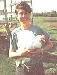
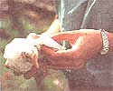
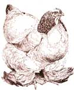
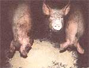
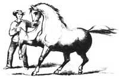
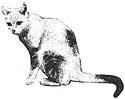

COUNTRY VET
Andrea Looney, DVM, explains how to roost fowl pests out of the henhouse and off the hens.
Photos By Jon Reis/Photo Link
Dear Andrea:
I have 45 chickens ranging in age from 10 months to two years. Last year I sprayed the henhouse once a month with malathion to keep away lice and mites brought in by visiting wild birds. I'm not keen on using the malathion. What are your suggestions?
-Molly Stanley Address withheld by request
Dear Molly:
The most common species of mites which infect chickens are the chicken mite, the northern fowl mite, and the tropical fowl mite. There are over 40 species of lice that can be found on poultry. Mites are smaller than lice and while mites feed on blood alone, most lice can feed on bits of feather, skin, and blood. Both can cause anemia, unthriftiness, and even death, especially in young birds. The chicken mite is particularly serious in warmer parts of the States. Adult female mites lay eggs within 12-24 hours of attachment. Some females are so hardy that they can survive up to 30 weeks or more without food. These mites can affect turkeys, pigeons, canaries, and several species of wild birds. Sparrows are thought to transmit the mite.
Malathion is an organophosphate, which are among the most effective pesticides when used correctly. However, chickens overdosed with malathion may experience muscle tremors and even seizures, and it goes without saying that people have become more concerned about the potentially hazardous effects of pesticides on the food chain.
Pyrethrins are also effective pesticides and are considered a more organic form of miticide since they are derivatives of the chrysanthemum. Permethrin, a pyrethrin derivative, can be used to treat both the birds and the house at concentrations of 0.05 percent. This will prevent mite infestation for up to eight weeks. The most effective treatment, however, is routine cleaning and monitoring of both all incoming birds and the facility itself.
First, the litter should be changed on a regular, frequent schedule. The nest boxes should be sealed yearly with varnish or paint. Roosts should be treated with preservative two or three times per year. The house should be cleaned out and all cracks and crevices steam-cleaned and treated with a pesticide once the birds are removed. The building should be closed up tight for an hour or two following fumigation and then adequately ventilated for an additional hour before returning the birds. Regular yard or pasture rotation is essential to the health of any livestock or poultry.
Pesticide treatment of the birds themselves is essential, especially to the point that the skin is wet. Yet if the housing is neglected, treatment won't be complete. Checking and treating the house, feed and egg crates, cases, and flats along with all your chicken-house clothing and boots is of great importance. If one area is neglected, it is of no use to treat the rest. Houses are the most affected, yet least aggressively treated, areas.
Dear Andrea:
We own a few Hampshire feeder pigs who have had distorted snouts since birth. What's the cause of this?
-Jake McColly Joliet, IL
Dear Jake:
Several bacteria are commonly found in the upper air passages of pigs. These bacteria have special
appendages that allow them to firmly attach to cells inside the nasal cavity. Some bacteria and the toxins that they produce irritate the nasal cells so much that the nose tissue is severely damaged. This produces the mild-to-severe coughing, sneezing, nose rubbing, and obvious snout distortion for which the disease is known. At times, black tear streaks can be seen running from the eyes. In severe cases, the rhinitis, or nasal inflammation, can result in pneumonia as well.
Mild occurrences of this disease-known as atrophic rhinitis-pose minimal economic consequences to pork producers, and often do not warrant the expense of treatment. Severe outbreaks or recurrence of signs however, require urgent action. To treat this disease requires strategy. Since the disease is extremely contagious, don't introduce any new pigs to your herd if you can help it. In fact, when purchasing, try to buy those pigs vaccinated against the disease or less severely affected. Injectable and oral antibiotics in feed and water may help halt disease progression. One of the most appropriate ways to treat the disease, however, is to prevent it via reduced stress. For pigs, this means in particular improved ventilation, decreased dust, and increased hygiene via more efficient manure removal.
Dear Andrea:
I'm a first-year vet student, specializing in large animals, at University of California. I'm finding that there are hundreds of causes of lameness in horses. In fact, there have been books written in volumes on this subject alone. One day I hope to be an expert, but, until then, what basic things can I do to prevent and treat lameness in my horses?
Jennifer Stuart Davis, CA
Dear Jennifer:
Living arrangements have much to do with injury. Late summer pastures, once plush, are now filled with flies and dried mud, cracked and hardened from the sun. Animals turned out daily are usually not shod, and they may stomp at flies and run awkwardly on the uneven ground, increasing the likelihood of hoof bruises and cracks, both of which invite bacterial infection. Uneven terrain may also bruise soles and increase the risk of sprain, strain, and tendinitis.
Pay close attention to horses turned out to pasture and consider having front feet shod during fly season and in dry weather. Likewise, damp or wet footing found in areas of flood, swamp, or high humidity can cause a horse's foot to expand, creating gaps at the white line (junction of sole and hoof wall). Small pastures with many horses are usually knee deep in manure at certain points, and bacteria or parasites thrive here simply waiting for a chance to invade a damp and injured hoof.
Use a hoof pick to clean manure and dirt from the hoof on a regular basis. Carefully examine the hoof wall and frog/sole to check for stones or plant matter. Puncture wounds often appear as black spots which are extremely sensitive to pressure. To locate an abscess, the veterinarian will probe the hoof, sole, frog, and heel with fingers and a hoof tester to find the precise spot of entry of a penetrating object. The horse will commonly flinch when it is pressed. Using a sharp hoof knife, a window is created (usually less than half an inch in diameter) around the wound or suspect area to allow infection to escape. This is called "paring out" the wound. Soaking the foot in warm Epsom salt baths and cleaning with hydro gen peroxide helps keep this window open from drainage, and kills bacteria. I am in favor of keeping small wounds un covered, as ban daging often promotes wicking of material into the wound and may also prevent proper drainage.
Conformation plays an incredibly large part in lameness. Some horses with flat or thin soles, worn heels, or thin, weak walls are susceptible to hoof injury. Horses with upright pasterns-i.e.: not enough angle from heel to hoof, contracted tendons, or knee deformities-are also particularly prone to further damage to foot and hoof. Regular visits from the farrier are important, especially in horses with conformational faults, as corrective shoeing is not only protective to the hoof, but can guard against stress and pain in the rest of the leg and body during exercise. Check the shoes frequently to see if they are loose or in need of resetting, which should be done every 812 weeks. If the hoof grows quickly, the shoes can actually cause harm by forcing an unnatural angle to the pastern. Lameness so caused is usually temporary and resolves with new shoes, but can become permanent if left unattended due to abnormal stresses placed on the rest of the leg.
Proper nutrition plays a great part in prevention of hoof injuries and lameness. Whether the animal is an elite athlete or a backyard companion, the types and amounts of roughage, grains, and vitamins/minerals should be tailored to exercise/stress needs in order to avoid problems with either obesity or poor body condition.
Especially important in avoiding lameness problems is assuring adequate levels of electrolytes (sodium, chloride, potassium, magnesium) thiamine, biotin, selenium, and vitamins C and E in a horse's diet. Constantly available fresh water, especially at this time of year, is a must. Horses fresh from exercise should not be allowed to drink until adequately cooled down to avoid lameness or muscular, cardiovascular, and colic (gastrointestinal) problems.
Proper exercise is essential. Temperatures in late summer near 100 degrees or combined with high humidity (greater than 50 percent) can cause a horse to sweat excessively, increasing chances of muscle strain, sprain, tying up, heat prostration, and simple exhaustion. Whatever the exercise, try to preserve mental and physical condition, offering a variety of workouts while minimizing the amount of stress the animal feels. Help cope with seasonal weather extremes by scheduling heavy workouts early in the day, before the sun, temperature, humidity, and insect population are at peak. Check equipment to be sure it fits well and there is no wear or grime at key contact points. You'd never believe how much lameness occurs because of faulty harnesses, saddles, bridles, and other tack. Avoid particularly difficult maneuvers on uneven ground and allow adequate warm up before and cooling out after work.
Needless to say, lameness is likely to crop up again later in life in any horse with a history of lameness , especially if the owner doesn't pay attention to some of the keys outlined above. Ninety percent of lameness occurs in the foot and hoof, and a majority of these are found in the horse's front legs. There's a great deal of truth in the old statement, "No foot, no horse." Prevention and sound management on the farm are the key to avoiding lameness and saving your horse (and you!) from days of pain, stress, and soreness.
Dear Andrea:
Our horse has terrible sores over his withers. We use a saddle pad when exercising him.
What else can we do?
-Paul Tucker Davenport, IA
Dear Paul:
Several factors help create saddle sores, those crusting blisters located behind the animal's shoulders, on the withers (between the shoulder blades), and on sides of the chest. Foremost of the causes of saddle sores is improper saddling. Some saddles are made to fit only a sawhorse, never an animal. An ill-fitting saddle, pad, or girth, coupled with a heavy or awkward rider, and some dirty tack, can turn the nicest horse into a painful, uncooperative snide. Saddles are often sold by dealers who do not understand your horse's anatomy in
particular and are anxious to sell the tack, not fit the animal. Check your saddle carefully to be sure that it's centered on the withers. Pressure sores over or behind the withers are often caused by a saddle that is too low on the back. Sores along the spine itself are often caused by cheaply made saddles that are nailed together underneath (with nails still evident) or by saddles with a high arch that bounce on the spine during exercise.
Be sure to brush the back of the animal-even if there is no time to brush the rest of the horse-prior to saddling or applying any type of equipment. Likewise after exercise, it helps immensely to wash the area under and around the saddle, massaging areas of high contact. The saddle should be cleaned with soft detergent (Murphy's oil soap) and leather conditioner on a regular basis. Saddle pads quickly absorb sweat and debris, and also need to be changed if not washed frequently.
When actually saddling the horse, place the saddle a bit forward on the withers and slide it back, snugging it into place with the girth. This will eliminate hair bunching inappropriately and causing sores. After the girth is cinched, be sure that there is no fold of skin trapped underneath it. If necessary, stretch the front legs out one at a time, as if shaking hands with the animal to pull the folds smooth.
Once a sore has developed, the quickest cure is to give the horse's back a rest. In fact, if the horse needs to be ridden, bareback is best. Otherwise, use different forms of exercise and equipment which will not come near the injured area. Experimenting with different saddles may help down the line. But with an open sore, new tack may exacerbate other painful areas, as the horse has learned to compensate and shift weight appropriately to move under the painful tack already. Rest is essential, as is cleanliness. Hot packing and carefully drying, as well as preventing fly contamination, will help. Most dressings occlude air which is conducive to healing the broken skin. You can use a horse with a saddle sore if you cut a pad so that no part touches the sore, and place another pad over this one. However, beware, as this pad arrangement slips easily and usually causes old sores to worsen and new ones to appear.
Dear Andrea:
I have a five-year-old mixed terrier/shepherd who limps very badly and has trouble getting up and standing any length of time. She can no longer jump on the bed or couch. What can I do?
-Rose M. Jolly Kendall Park, NJ
Dear Rose:
There are a number of problems which affect the back and hind limbs of dogs, causing them a great deal of pain or inability to exercise. The first step in diagnosing them would be through manipulations performed by your veterinarian. Once you know where the problem originates-muscles, bones, tendons, ligaments, nerves-X-rays are probably in order. Your veterinarian may want to perform more specialized studies such as scans, dye studies, or muscle activity measurements, to identify the severity of the problems.
In general, many shepherd and shepherd-mix dogs suffer from a variety of spine, hip, and knee problems. The array of conditions is so vast that it's difficult to pinpoint a treatment to fit all. Weight reduction through an appropriate diet-not simply decreasing the amount of food-is important in treating most orthopedic problems. The more weight, the more difficult it is for the animal to heal appropriately.
In addition, pain relievers are often necessary. You can use aspirin if your dog has had no bleeding and gastrointestinal problems; dosages vary per specific animal metabolism and weight. There are many veterinarians who recommend essential fatty acids for arthritic problems. These come in many formulations and are extremely beneficial for dogs with skin, coat, and arthritis problems. I happen to believe that many of these animals, regardless of specific arthritic problem, would benefit from certain joint fluid precursors, or cartilage extracts, called polysulfated glycosaminoglycans, which can be given in oral or injectable forms.
Exercise should be restricted to short, frequent walks while repair of injured tissue takes place. Rest is essential; physical therapy can be performed at home, and if done correctly, helps the animal "warm up" for limited exercise or "cool down" appropriately. Several surgical options have become available, although your vet is best able to make decisions on whether this is appropriate treatment.
|
 |
 |
 |
|
 |
 |
 |